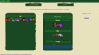

About Me
- Love programming, gaming, good beer, and Peanuts (think Charlie Brown)
- Communicative and relaxed
- Very interested in emulation and the low level workings of computers and programs
- Currently developing my C skills
Skills
Strong: Java • Javascript/jQuery • Python • Ruby • Pair Programming • Team CommunicatonMedium: C • Scheme • Test-Driven Development • Processing • HTML5 • CSS3/SASS • Sinatra • Rails • Django • Socket.io • SQL • Various ORMs
Light: C++ • Flex & Bison • Pyrobot
Projects
Mobile Art
Streamer (left) and Eclipse (right) were both part of my exploration into art games and mobile apps using the Processing programming language.OneShot
 A simple item set creator for League of Legends. My first real web app with separate Sinatra and Django backends.Education & Experience
Oct 2015Graduated Dev Bootcamp
19-week intensive web development program
May 2015
Graduated Sarah Lawrence College (SLC)
Concentration in Computer Science
Additional study in Japanese and Spanish
Summer 2014
SLC Summer Research Program
Explored mobile/touch interfaces for programming on the go
Managed a small team as we implemented a Scheme programming app for Android
Summer 2013
SLC Summer Research Program
Created simple Nao robot API in Python for use by new SLC robotics students
Learned Framsticks and other evolution modeling applications
2010-2012
Mathnasium of South Pasadena
Managed floor of tutoring center
Collaborated with 3-5 other math tutors to teach students K-12+